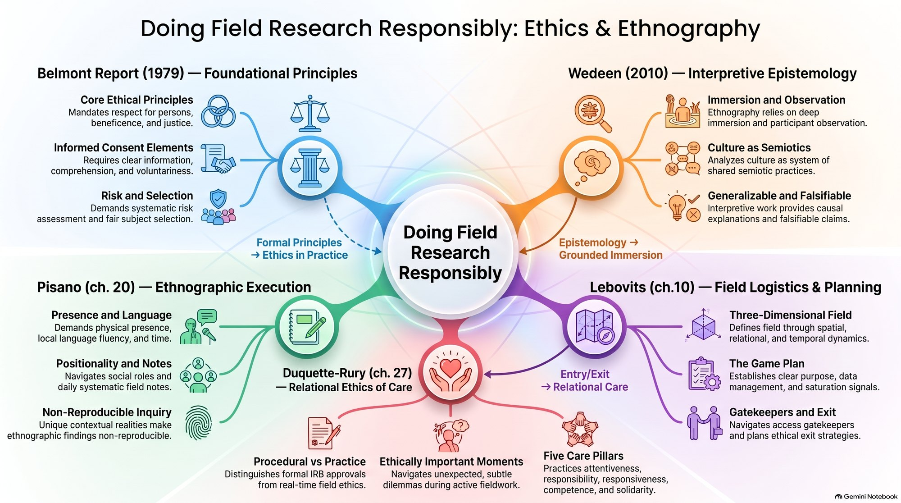
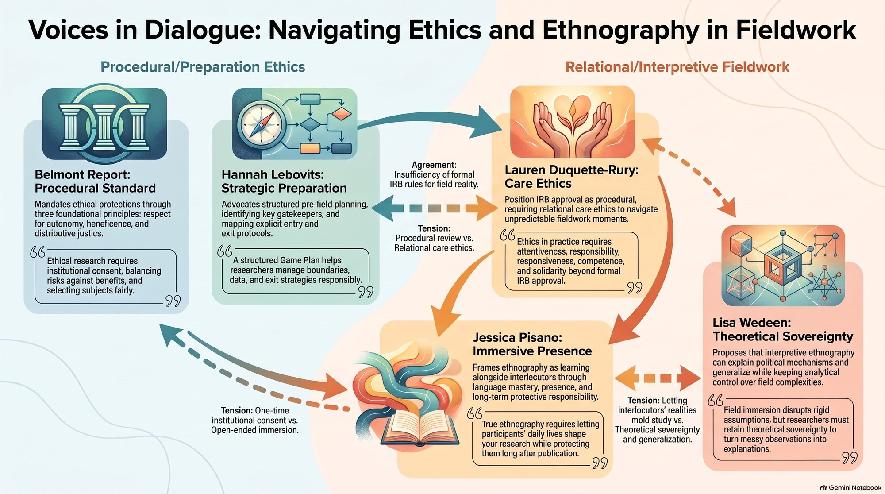
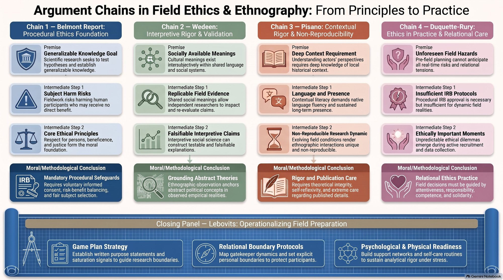

The Classroom · Qualitative Methods in Political Science · Week 4 · 16 Nov 2026
Ethics of Field Research; Ethnographic Research
What do we owe the people we study, and what can immersion teach us that other methods miss? The Belmont Report sets out the principles behind every ethics review, Wedeen and Pisano make the case for ethnography as a rigorous way of knowing politics, and Lebovits and Duquette-Rury show what preparing for the field and acting ethically inside it look like in practice.
1 At a glance 30 seconds
Key questions
- Which principles should govern research with human subjects, and where do they come from?
- Can a model of consent built for biomedical research fit open-ended immersion, where risks cannot all be known in advance?
- Is ethnography only description, or can it explain, generalize and be tested?
- What does a researcher owe interlocutors before, during and after fieldwork, including after publication?
Key concepts
Research vs practice
Research is designed to test a hypothesis and contribute to generalizable knowledge, usually under a protocol; practice aims only at the well-being of a particular person. If an activity contains any element of research, it should be reviewed. — Belmont Report (1979), Part A
Respect for persons, beneficence, justice
Treat people as autonomous and protect those with diminished autonomy; do not harm and maximize benefits while minimizing harms (as an obligation, not charity); distribute the burdens and benefits of research fairly. — Belmont Report (1979), Part B
Informed consent
Three elements: information, comprehension and voluntariness. Coercion is an overt threat of harm; undue influence is an excessive or improper reward or overture. — Belmont Report (1979), Part C
Interpretive vs noninterpretive ethnography
Noninterpretive ethnography takes statements at face value and looks for structure and system; interpretive ethnography centres on meaning, and often on process and history. — Wedeen (2010)
Culture as semiotic practices
A lens on meaning: how language and symbols represent politics and produce political effects, e.g. démocratie vs demokaraasi in Senegal. — Wedeen (2010), drawing on Schaffer
Participant observation
Not just watching or talking but doing what your interlocutors do, so the researcher is both actor and spectator; it needs presence, the local languages and time. — Wedeen (2010); Pisano (2024)
The Game Plan and the saturation signal
A written plan with a purpose statement, a preliminary point at which you can assert findings with confidence, a data management plan and limitations. — Lebovits (2024)
Procedural ethics vs ethics in practice
IRB-style principles and review on one side; the 'ethically important moments' that arise after approval, which call for reflexivity and a relational ethics of care, on the other. — Duquette-Rury (2024), after Guillemin & Gillam
Tap a concept for its definition.
What you get out of it
- Belmont gives three principles and three applications (consent, risk/benefit assessment, selection of subjects). It offers an analytical framework, not rules that settle every case: the prisoner example shows the principles can pull in opposite directions.
- Wedeen argues that interpretive ethnography need not give up generalization, causal explanation or falsifiable claims; because meanings are socially available they can be checked by others. Its burden is to keep 'theoretical sovereignty' over messy field detail.
- Pisano: ethnography means learning with people, letting their lives decide how you spend your time. It is not reproducible, so it demands rigor, transparency and care, including withholding material when circumstances change for your interlocutors.
- Ethics does not end with the IRB stamp: preparation (Lebovits) and judgement in the moment (Duquette-Rury) carry the principles into the field.
Cases and evidence
- Tuskegee syphilis study Belmont Report
Disadvantaged rural Black men were denied effective treatment so the study could continue; the report's example of injustice in selecting subjects. - Prisoners as volunteers Belmont Report
Respect for persons seems to require letting prisoners volunteer, yet prison conditions may coerce them: a dilemma within a single principle. - Syria's cult of personality Wedeen (2010)
Flagrantly fictitious slogans enforce obedience and induce complicity; Wedeen says this claim could be falsified by a noncharismatic regime where empty slogans generate real emotional commitment. - Démocratie vs demokaraasi Wedeen (2010), citing Schaffer
Senegalese elites mean contested elections; many ordinary Wolof speakers mean equality and collective economic security. - 'Pro-Russian' voting in eastern Ukraine Pisano (2024)
Fieldwork showed that votes read as linguistic identity often reflected economics and vote manipulation. - 'Victim of the regime' posters Pisano (2024)
Opposition parties tear down their own posters to look persecuted, a deception hard to detect without local knowledge.
The readings
| National Commission (1979) | The Belmont Report · full report Three principles (respect for persons, beneficence, justice) and three applications (informed consent, risk/benefit assessment, selection of subjects). |
| Wedeen (2010) | Reflections on Ethnographic Work in Political Science · pp. 255–72 Defends interpretive ethnography as able to explain, generalize and make falsifiable claims, while criticizing both 'raw data' positivism and navel-gazing reflexivity. |
| Lebovits (2024) | Preparing for the Field: The Nuts and Bolts (Cyr & Goodman ch. 10) · ch. 10 The field as spatial, relational and temporal; the Game Plan; IRB, gatekeepers, entry and exit; physical, social and personal preparation. |
| Pisano (2024) | Ethnography (Cyr & Goodman ch. 20) · pp. 233– What ethnography requires (presence, participation, language, time), how to do it, and its caveats, with examples from Ukraine and Russia. |
| Duquette-Rury (2024) | Navigating Ethical Issues and Choices in the Field (Cyr & Goodman ch. 27) · pp. 308– (skim) Beyond procedural ethics: ethically important moments and a relational ethics of care with five pillars. |
Where this fits in the course
Weeks 1–3 were about design: questions, cases and causal inference. From this week the course turns to collecting material in the field, starting with the ethics that govern all of it and with ethnography, the most immersive method. It picks up Schwartz-Shea & Yanow's interpretive logic from week 1 and sets up interviewing (23 Nov) and archives (30 Nov). Weeks 4–6 are the material for the written paper due 4 December.
- 1Research questions, concepts, and causal inference
- 2Cross-case methods: case selection and comparison
- 3Within-case methods: process tracing
- 4Ethics of field research; ethnographic research (after the quiz)
- 5Interviewing
- 6Archival research
- 7Content and discourse analysis
- 8Final exam
2 Listen and look
Two takes on the same readings: pick the length that fits your commute.



3 Test your understanding
4 quick questions, then 2 to answer in your own words. Nothing is saved or sent.
According to the Belmont Report, which three elements make up informed consent?
Part C analyses consent as information, comprehension and voluntariness. Respect for persons, beneficence and justice are the three principles in Part B.
A researcher offers participants in a poor community a payment so large that they feel unable to refuse. In Belmont's terms this is:
Coercion is an overt threat of harm; undue influence is an excessive, unwarranted or improper reward or overture to obtain compliance, especially with vulnerable subjects.
Which claim does Wedeen (2010) defend?
She argues interpretive social science need not forswear generalization or causal explanation, and gives her Syria argument as a falsifiable example, while rejecting fieldwork treated as raw data.
For Pisano (2024), a researcher who conducts in-depth conversations through a translator during a two-week visit is most likely doing:
Pisano says that working through a translator almost certainly means interview research, and that ethnography needs sustained presence and knowledge of context.
Why does Duquette-Rury argue that IRB approval is not enough? Name the distinction she draws and one tool she offers.
She distinguishes procedural ethics (the IRB principles of respect for persons, beneficence and justice, set before fieldwork) from ethics in practice: 'ethically important moments' that arise after approval and cannot all be foreseen. Her tool is a relational ethics of care built on reflexivity, context sensitivity and five pillars: attentiveness, responsibility, responsiveness, competence and solidarity.
Using the Belmont Report and one ethnography reading, explain one tension between procedural consent and ethnographic fieldwork.
Belmont's consent assumes the researcher can tell subjects the procedure, purposes, risks and benefits up front. In ethnography, Pisano shows that questions change in the field and risks can change after publication (she withheld material when Russia's war changed the risks for her interlocutors). So consent and risk assessment have to continue throughout the research and after it, which is Duquette-Rury's point about ethics in practice.
Podcasts and infographics are generated with Google NotebookLM from the course readings; the brief and quiz are drafted with Claude from the readings and syllabus. I curate what goes up, but AI-generated material can contain mistakes. Use these pages alongside the readings and seminars, and check anything important against the original texts.